| 日付 | 2013年4月13日（土） |
|---|---|
| 山域 | 丹沢 |
| メンバー | 家族（長女・2歳） |
| 山行形態 | 子連れ日帰り |
| アクセス | 車 |
| ルート (Map) | 三国山ハイキングコース入口 (9:03) - (9:24) パノラマ台 - (9:52) 鉄砲木ノ頭 (10:01) - (10:35) 三国山 (11:07) - (12:21) アザミ平 - (12:37) 立山 (12:49) - (13:22) 籠坂峠 |
ここ最近、週末の度に天気が悪く、なかなか山に行けなかった。
子供からも山に行きたいとせがまれていた（？）ため、
久々の晴れ予報の週末に山に行くことにする。
身重の妻も気晴らしに付いてくると言うので、
比較的家から近く、駐車場近辺の雰囲気が良く、手軽に登れる山を探す。
そこで思いついたのが鉄砲木ノ頭～三国山のコース。
少々家から遠いが、山中湖畔からは富士山が見えて、なかなか雰囲気の良い場所だ。
三国山ハイキングコース入口バス停近辺で車から降りる。標高985m。
車でパノラマ台まで登ることができるが、車で中腹まで登るのはあまり好きではない。
妻と別れて子供をキャリアに乗せて歩き出す。
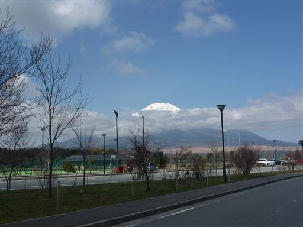
歩き始めるとすぐに車道から離れて登山道に入っていく。
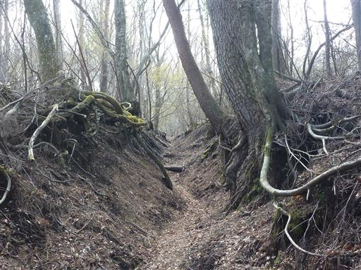
しばらく登るとパノラマ台に到着する。
今日は快晴予報だったのだが雲が多く、富士山はすっきりと望めない。
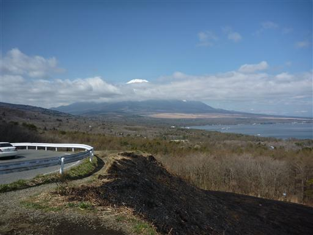
眼下には山中湖、その背後には南アルプスがよく見えている。
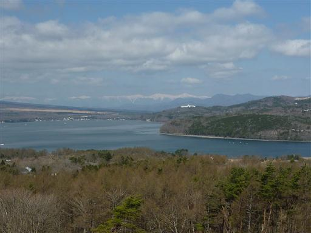
こちらは道志の山々。富士山の展望スポットなので観光客もちらほら見られる。
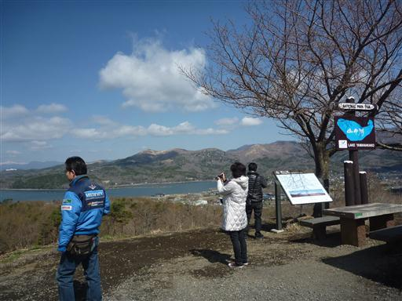
パノラマ台の駐車場の裏から登山道に入っていく。
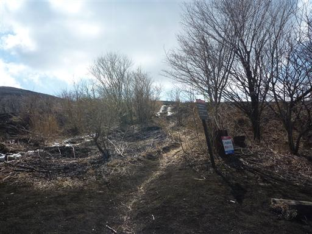
なぜかこの辺りは草を焼いた跡がある。何のために焼いているのだろう？
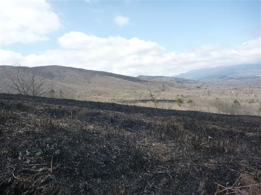
風を遮るものがないため、この辺りは比較的風が強い。
木も心なしか右に曲がっているように見える。
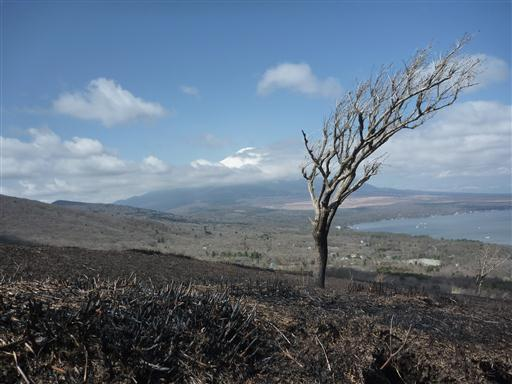
辺りは荒涼としている。展望は良いのだが無機質な景観だ。
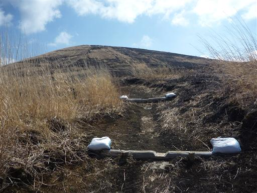
鉄砲木ノ頭の山頂に到着する。標高1291m。
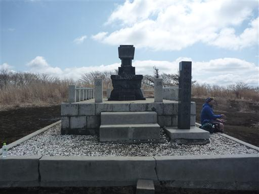
この山頂は360度の展望台だ。真正面には富士山が大きく聳えている。
しかし中腹にかかる雲は取れそうで取れない。
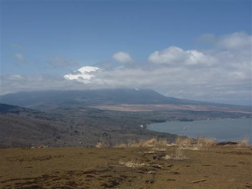
目の前にこれから辿る予定の三国山から大洞山の稜線が見える。
起伏がほとんどなく歩きやすそうな尾根だ。
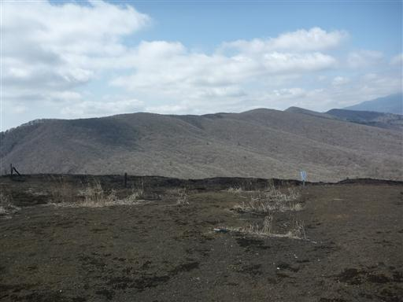
昼食にはまだ早いので、小休止をとったら三国山に歩を進める。
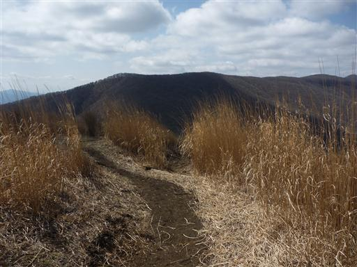
三国峠を通過する。峠には立派な車道が通っている。
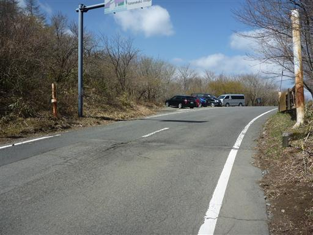
三国峠からは子供をキャリアから降ろして歩かせてみたが、3分くらいでギブアップ。
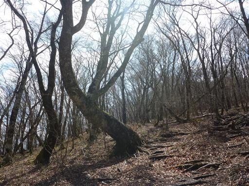
広い尾根にはあちらこちらに踏み跡が錯綜していて歩きにくい。
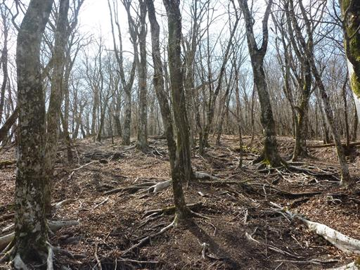
三国山の山頂に到着。標高1320m。
名前の通りここは神奈川、山梨、静岡の三国の県境だ。
持っている古い地図には180度の展望が広がるように記載されているが、全く展望はない。
ここで昼食休憩をとることにする。
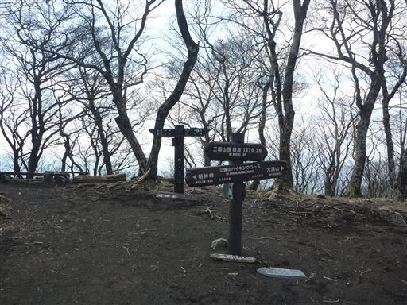
三国山からの稜線は美しい樹林帯の道になる。
足元にはバイケイソウの葉が顔を出している。
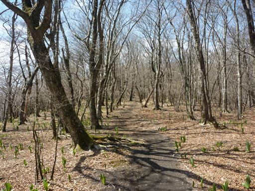
不思議な形の木。腰かけたら折れそうだ。
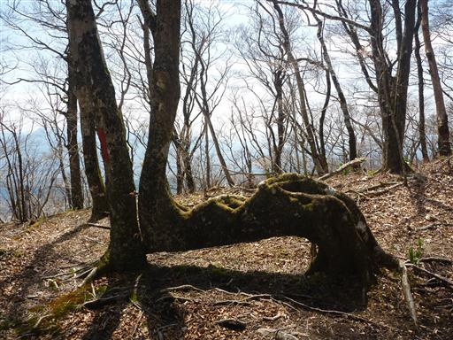
広い尾根には比較的細い木が密集して生えている。道はアップダウンが少なく歩きやすい。
マイナーな道かと思ったら、結構人とすれ違う。
富士山を背にする形になるが、逆方向に歩くのが主流のようだ。
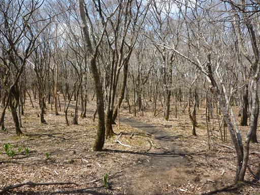
道沿いには所々に手の込んだ標識が立てられている。
古いものなのか、残念ながら読めなくなってしまっている部分が多い。
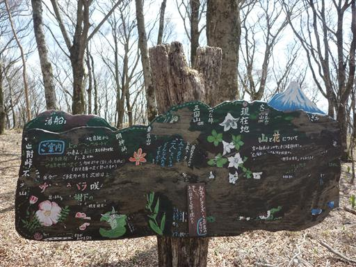
大洞山（別名角取山）に到着。山頂というより通過点という感じだ。
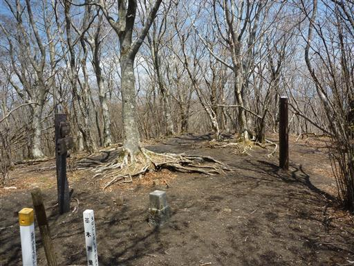
富士山の頭がわずかながら見えている。
この稜線は富士山の間近にありながら、富士山の展望ポイントはほとんどない。
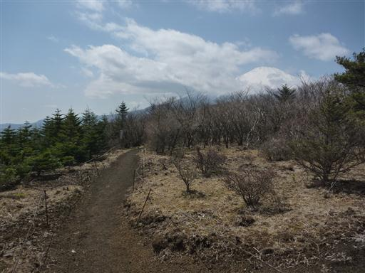
左手には愛鷹山が見えている。
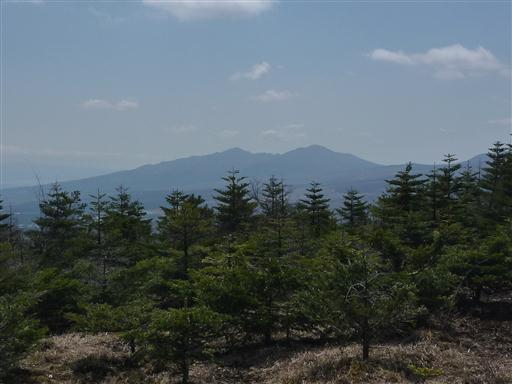
サッカーができそうなほど広い平地が現れる。アザミ平と呼ばれるところだ。
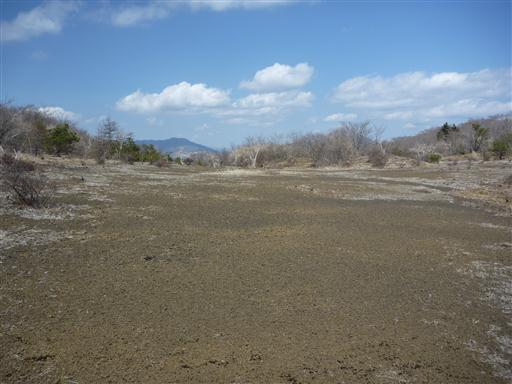
低い木がまばらに生えている。この辺りはフジアザミという固有種が咲くところらしい。
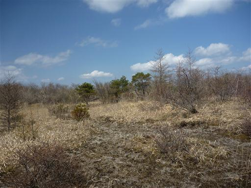
アザミ平の分岐点に到着する。ここから籠坂峠に直接下山することもできるが、
時間に余裕があるので立山に寄っていくことにする。

ゆったりとした坂道を登っていく。
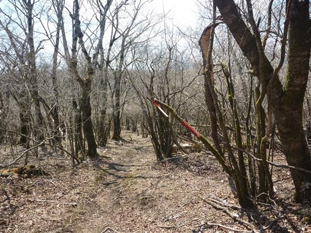
立山山頂に到着。傾斜が緩くあまり山頂という感じがしない場所だ。
立山展望台まで0.3kmと書かれているので、せっかくだから行ってみることにする。
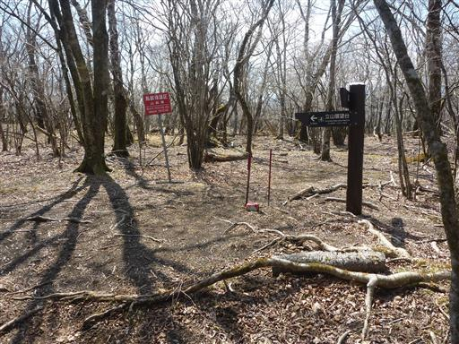
立山からは少しだけ下り道となる。辺りに人の気配は無い。
マイナーな立山山頂からさらに離れた場所にあるため、ここまで来る人はかなり少なそうだ。
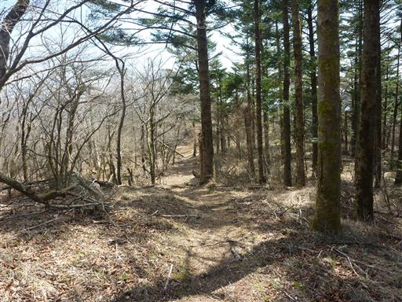
立山展望台到着。残念ながら富士山には少し雲がかかっているが非常に雰囲気の良い場所だ。
のんびり寝っころがれそうな草原、目の前には大きな富士山、
そして1日いても誰も来なさそうな場所にあるというのが良い。
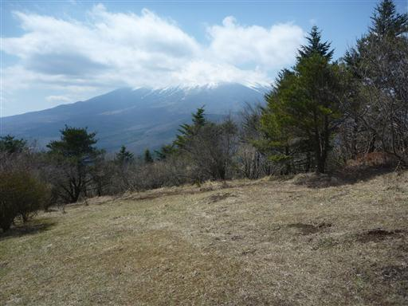
立山東分岐点に戻ってくる。
アザミ平までは戻らずここから直接籠坂峠に下山することにする。
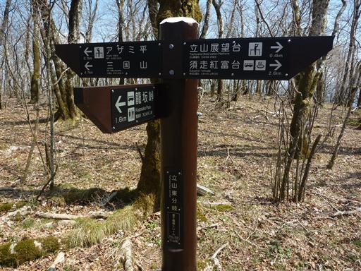
沢沿いの道は土がおおきく抉れている。
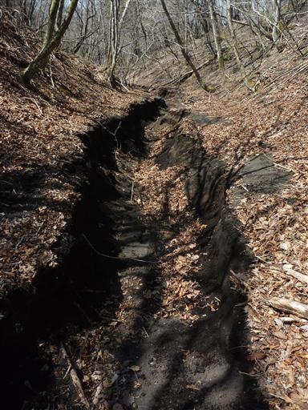
土の層が見えている。富士山の火山灰だろうか？
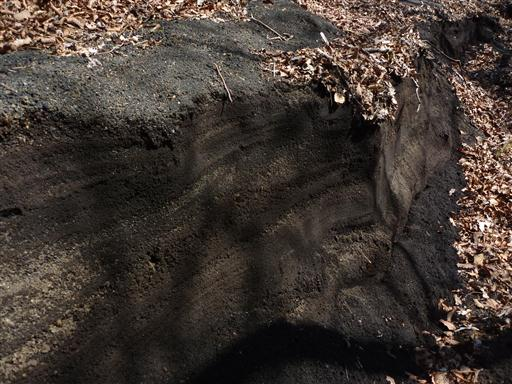
踏み跡が薄くて道が合っているか不安になってきたころ、アザミ平からの登山道と合流する。
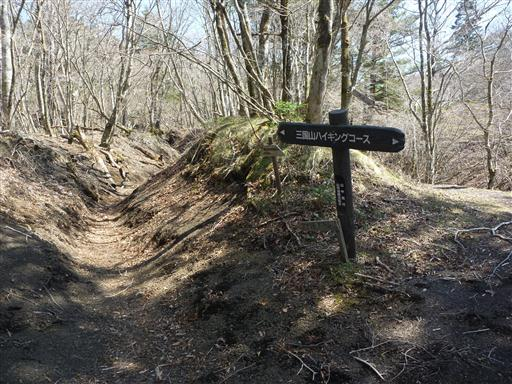
ここから先はよく整備された道を下って行く。
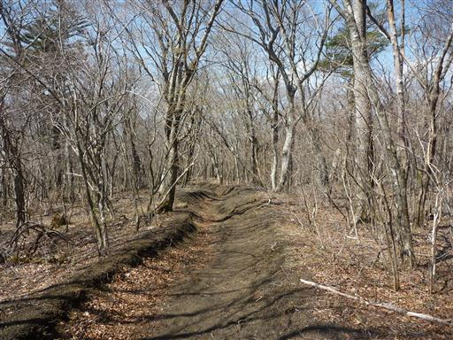
信じられないほど枝が複雑に絡み合っている。いったい何の木だろうか？
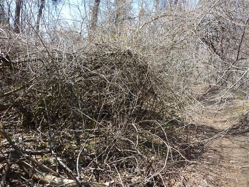
お墓に下山してくる。ずいぶんと眺めの良い墓地だ。
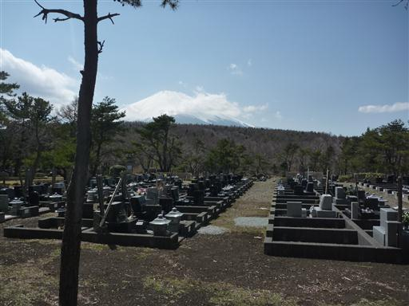
道端にアセビの花が咲いている。子供は「イチゴみたい」と言っている。
籠坂峠に下山し、下で待ってる妻に迎えに来てもらう。
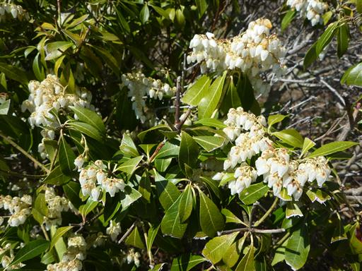
下山後は山中湖交流プラザ「きらら」に寄ってみる。
駐車場からは先ほど登った鉄砲木ノ頭がよく見えている。
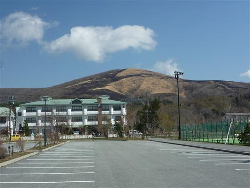
大きな遊具があったので、ここで遊んでいく。
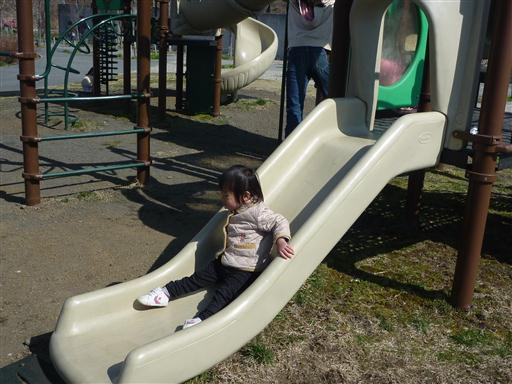
山中湖畔に下りてみる。白鳥が気持ちよさそうに浮かんでいる。
ようやく雲が取れて富士山が完全に姿を現した。
快晴を予想して出かけた割に雲が多い一日だったが、
三国山から先の稜線は思いの外美しい道で満足できる山登りだった。
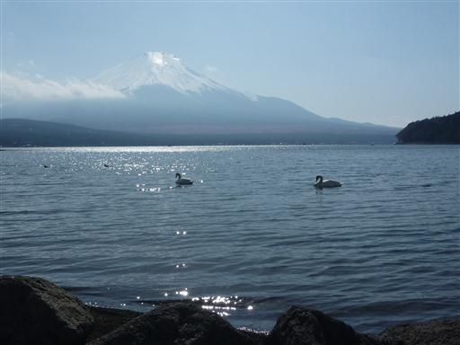